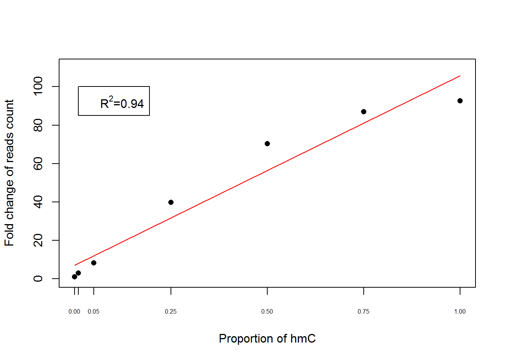

FinalAnalysis
Shengtong
July 25, 2018
Accuracy of Jump-seq assessed with synthetic DNA: estimation of FP rates.
Figure: barplot, CPM (counts per million) of 5hmC vs. unmodified C. Show number of sites in the plot.

Number of sites (5hmC or unmodified C ) are in brackets
Quantification of 5hmC: linear correlation of read counts vs. 5hmC amount
Figure: scatter plot.

The fitted regression line (red) on the fold change of number of reads (point) at different hmC proportions in spike in
Visualization
Figure: IGV view, show peaks at different DNA levels, also show peaks from Tab-seq or Nano-seal. See Figure 1B of Nano-seal paper.
Comparison across replicates and different DNA levels
Correlation: 0.6 ng - 48 ng. Both 5mC and 5hmC. Figure: scatter plot, choose appropriate window size. Quantification of peak strength by CPM, divided by number of C’s in a peak. See Figure 1C. of Nano-seal. Figure: heat-map to summarize the results. See Figure S1C. Estimate precision and sensitivity of 0.6 ng vs. 48 ng. Figure: barplots, show precision and sens. at different DNA levels (using sites at 48ng as true sites).
Correlation among 48ng 5hmC with window size of 1kbp
Correlation among 48ng 5hmC with window size of 100bp
Correlation among 48ng 5hmC with window size of 500bp
Correlation among 48ng 5hmC with window size of 1kbp
Correlation of 5hmC between 48ng and 0.6ng with window size of 1kbp
Comparison of Jump vs nano-seal with strong TAB-seq as gold standard

- JumpSeq: 1kb windows are called at FDR 0.05
Comparison with Tab-seq
48ng hmC: combine the replicates. Assess FP rates, sensitivity. Figure: barplot, precision (percent of Tab-seq peaks) as function of DNA level, and number of sites/peaks found. Comparison at window level (e.g. 100bp). See Figure S1F of Nano-seal paper. Figure: spatial distribution of reads, centered on Tab-seq peaks. See Figure S1G and S1H of Nano-seal paper.

From 0.6ng to 48ng 5hmC samples, 20bp peak windows are called at FDR 0.05 for jump-seq. Random windows are chosen in the whole genome in the same amount of peak windows. The overlap of peak windows by jump-seq and random windows with TAB-seq peaks are colored in red and blue respectively. Number of peak windows are shown over the bar.
- FDR 0.05 is used for determine peak windows and sated clearly otherwise
- To make fair comparison, in each case, the same amount of random windows as peak windows are picked in the whole genome and compute the its proportion windows overlpping with peaks from other methods.
- In some case, sinlge sample was used and in some cases, may be combined samples are used, but the enrichments are similar in both cases.
Sensitivity
Sensitivity
- 1kb windows are called at FDR 0.05
Spatial distribution
The reference is GSM882244_FDR_0.0484. First got non-overlapping 5hmC regions and make sure each window has only one 5hmC site. For each window, count the reads depth at every site, then add up reads depth of these non-overlapping windows. Reads distribution is the accumulative reads depth at every base of all non-overlapping windows. Input Bam file is the replicate with largest number of reads.

Comparison with Nano-seal
0.6 - 48 ng hmC. Assess FP rates, sensitivity. Figure: similar to Tab-seq.

From 0.6ng to 48ng 5hmC samples, 20bp peak windows are called at FDR 0.05 for jump-seq. Random windows are chosen in the whole genome in the same amount of peak windows. The overlap of peak windows by jump-seq and random windows with Nano-seal peaks are colored in red and blue respectively. Number of peak windows are shown over the bar.
- FDR 0.05 is used for determine peak windows and sated clearly otherwise
- To make fair comparison, in each case, the same amount of random windows as peak windows are picked in the whole genome and compute the its proportion windows overlpping with peaks from other methods.
- In some case, sinlge sample was used and in some cases, may be combined samples are used, but the enrichments are similar in both cases.
Sensitivity

Sensitivity
- 1kb windows are called at FDR 0.05
Comparison with BiS-seq (5mC)
2.4 - 48 ng. Assess FP rates, sensitivity. Figure: similar to Tab-seq.
Enrichment

Enrichment of methylated cytosine from Gary Hon at different genomic concentrations. Peak windows with p value less than 10^{-6} is used for 48ng, 24ng, 12ng, 6ng and FDR0.05 is used for 2.4ng. Number of peak windows are shown over the bar.
- cutoff used for peak windows: 2.4ng (FDR0.05), others use p values less than \(10^{-6}\).
Sensitivity
Normalized proportion of methylated cytosine from Gary Hon at different genomic concentrations recovered by Jump-seq. Peak windows with p value less than 10^{-6} is used for 48ng, 24ng, 12ng, 6ng and FDR0.05 is used for 2.4ng
Enrichment of genomic features: enhancer, CTCF, etc.
Figure: barplot, for each feature, two bars, observed enrichment (fold or proportion) vs. random. See Figure 3B. of Tab-seq paper. Remark: alt. figure, correlation of read density vs. strength of features. Box-plot: range of read density vs. strong, weak enhancers.

Eleven 48 ng samples are combined together and 20 bp peak windows are called at FDR 0.05. Random windows are randomly selected in the whole genome with the same amount of peak windows. The proportion of chosen peak windows (red) and random windows (blue) overlapping in different genomic regions are calculated and the corresponding odds ratio are shown above the red bar
High resolution distribution of Jump-seq reads
Figure: histogram of reads centered on Tab-seq sites, at a small scale 0-50bp.
48ng 5hmC
Overlap by Venn diagram
If we combine eleven 48ng 5hmC samples together, there are 2367316 20bp windows with FDR 0.05, of which 686652 windows are overlapping with strong TAB-seq windows which are extended 10 bp downtream and 10 bp upstream. for strong TAB-seq, there are 2057636 20bp extended windows and 763937 are overlapping with Jump-seq windows.

Venn diagram of 5hmC and TAB-seq. 48ng samples are combined together and 20 bp windows are called at FDR 0.05. The proportion of peak windows of jump-seq overlapping with TAB-seq and the proportion of peaks of TAB-seq overlapping with jump-seq are presented inside the circle.
If we combine eleven 48ng 5hmC samples together, there are 2367316 20bp windows with FDR 0.05, of which 386331 (16.32%) windows are overlapping with hmC seal. For hmC seal, there are 64865 peaks and 58280 (89.85%) are overlapping with 5hmC peaks.

Venn diagram of 5hmC and hmC-seal. 48ng samples are combined together and 20 bp windows are called at FDR 0.05. The proportion of peak windows of jump-seq overlapping with hmC-seal and the proportion of peaks of hmC-seal overlapping with jump-seq are presented inside the circle.
0.6ng 5hmC
enrichment in genomic regions

For 0.6ng 5hmC sample, 20 bp windows with at least one reads are called peak windows. Random windows are chosen in the whole genome in the same amount of peak windows. The proportion of peak windows and random windows in different genomic regions (200bp bins) are computeed.
- cis-regulatory regions are extended 200bp windows.
- jump peaks are 20 bp windows with at least one reads.
Reads overlap with single 48ng sample
0.6ng: 1085 20 bp windows of 21188
This R Markdown site was created with workflowr